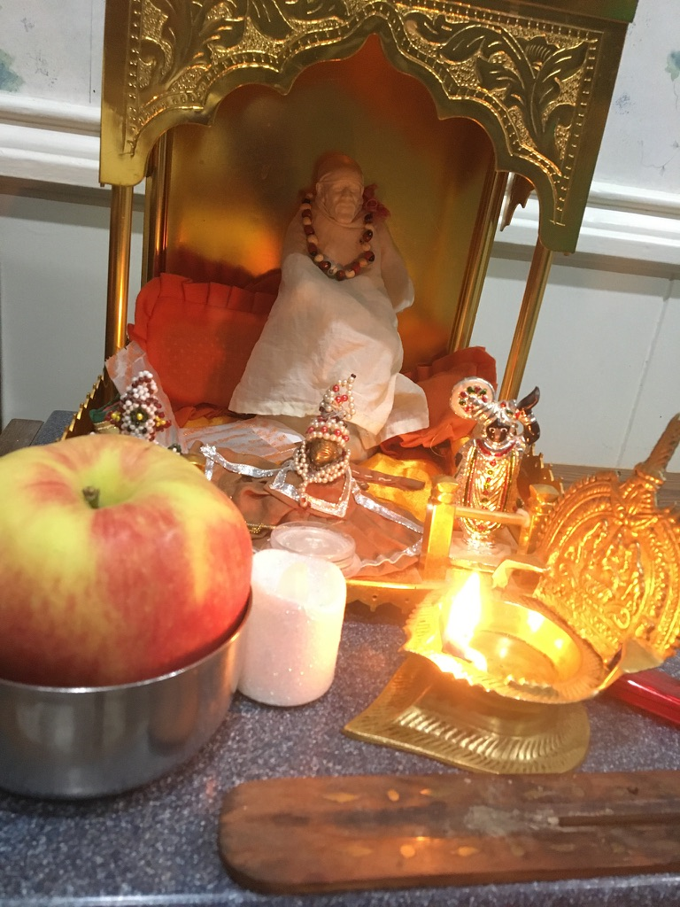
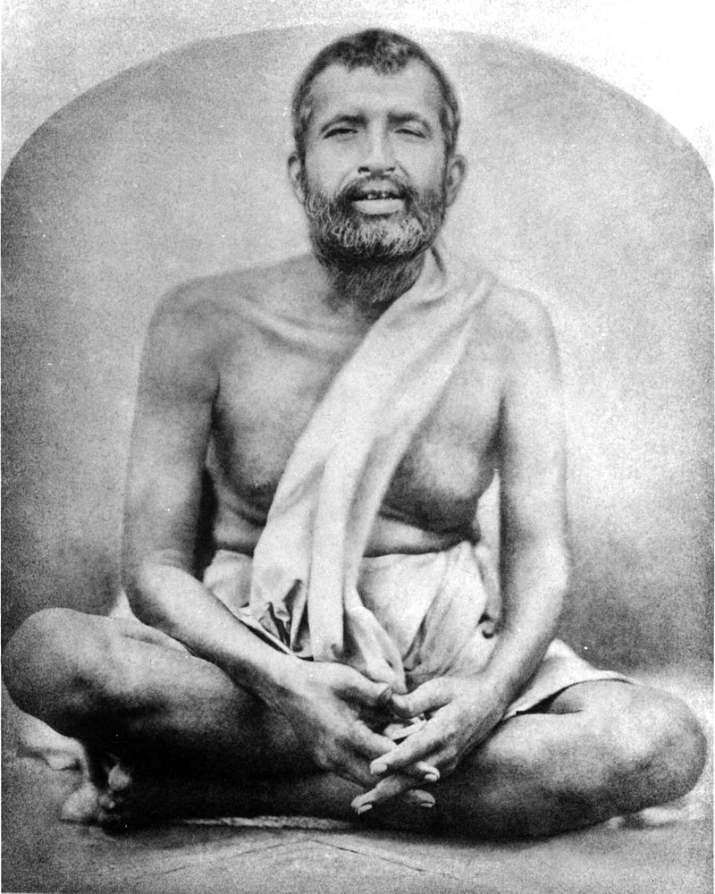
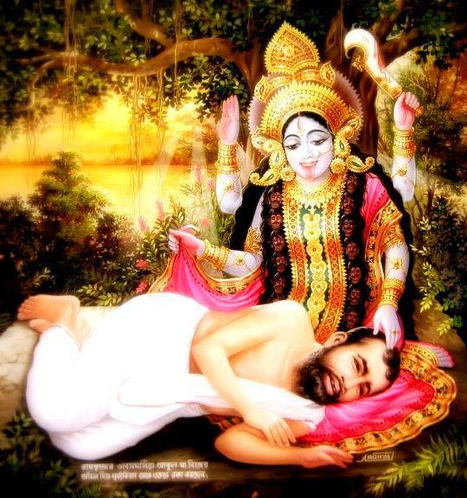

Assurances 📿
- No harm shall befall him who steps on the soil of Shirdi.
- He who comes to my Samadhi, his sorrow and suffering shall cease.
- Though I be no more in flesh and blood, I shall ever protect my devotees.
- Trust in me and your prayer shall be answered.
- Know that my spirit is immortal; know this for yourself.
- Show unto me he who has sought refuge and has been turned away.
- In whatever faith men worship me, even so do I render to them.
- Not in vain is my promise that I shall ever lighten your burden.
- Knock, and the door shall open; ask and it shall be granted.
- To him who surrenders unto me totally, I shall be ever indebted.
- Blessed is he who has become one with me.
Arati 🙏
Morning arati
Noon arati
Evening arati
Bedtime arati
Abridged arati
Arati by Vivekananda
Music 🎶
Sai Nath Tere Harazon Haath
Subha Subha Shirdi Mein
Kabhi Darshan KO Shirdi Tu Aaya Nahin
Bolo Sai
Daya Karo Sai Nath
Ya Devi Sarva Bhuteshu
Ruso Na Sai
Sounds from Shirdi
Raga Durga
He Lives in You
Wicked Game
Sombody's Crying
September
Isn't She Lovely
If You Want Me to Stay
Say You'll Be There & Wanabe
Amazing Grace
Linger
Sai Dhun Pt. 1
Sai Dhun Pt. 2
Mantra box
Om Sai Namo Namaha
Om Sai Ram Sai Sham Hare Hare
Sai Ram Sai Ram
Om Sai Shiv Sai
Baba Sai Sai Sai
Sayings⛪🕋🕌 🕍🛕
- Why fear when I am here?
- I am formless and everywhere.
- I am in everything and beyond. I fill all space.
- All that you see taken together is Myself.
- If one devotes his entire time to me and rests in me, he need fear nothing for body and soul.
- If one sees me and me alone and listens to me Leelas and is devoted to me alone, he will reach God.
- My business is to give blessings.
- I get angry with none. Will a mother get angry with her children? Will the ocean send back the waters to the several rivers?
- I will take you to the end.
- Surrender completely to God.
- If you make me the sole object of your thoughts and aims, you will gain the supreme goal.
- Trust in the Guru fully. That is the only sadhana.
- I am the slave of my devotee.
- Stay by me and keep quiet. I will do the rest.
- What is our duty? To behave properly. That is enough.
- My eye is ever on those who love me.
- Whatever you do, wherever you go, always bear this in mind: I am always aware of everything you do.
- I will not allow my devotees to come to harm.
- If a devotee is about to fall, I stretch out my hands to support him or her.
- I think of my people night and day. I say their names over and over.
- My treasury is open but no one brings carts to take from it. I say, "Dig," but no one bothers.
- My people do come to me of their own accord; it is I who seek them and bring them to me.
- All that is seen is my form: ant, fly, prince, and pauper.
- However distant my people may be, I draw them to me just as we pull a bird to us with a string tied to its foot.
- I love devotion.
- This body is just my house. My guru has long ago taken me away from it.
- Those who think Baba is only in Shirdi have totally failed to know me.
- Without my grace, not even a leaf can move.
- I look on all with an equal eye.
- I cannot do anything without God's permission.
- God has agents everywhere and their powers are vast.
- I have to take care of my children night and day and give an account to God of every paisa.
- The wise and cheerful are content with their lot in life.
- If you are wealthy, be humble. Plants bend when they bear fruit.
- Spend money in charity; be generous and munificent but not extravagant.
- Get on with your worldy activities cheerfully, but do not forget God.
- Do not kick against the pricks of life.
- Whatever creature comes to you, human or otherwise, treat it with consideration.
- Do not be obsessed by the importance of wealth.
- See the divine in the human being.
- Do not bark at other people and don't be aggressive, but put up with others' complaints.
- There is a wall of separation between oneself and others and between you and me. Destroy this wall!
- Give food to the hungry, water to the thirsty, and clothes to the naked. Then God will be pleased.
- Patience ferries you across to the distant goal.
- The four sadhanas and six sastras are not necessary. Just have complete trust in your guru: it is enough.
- Meditate on me either with form or without form. That is pure bliss.
- God is not so far away. He is not in the heavens above, nor in hell below. He is always near you.
- If anyone gets angry with another, they wound me quickly.
- If you cannot endure the abuse from another, just say a simple word or to, or else leave.
- What do we lose by another's good fortune? Let us celebrate with them, or strive to emulate them.
- I stay by the side of whoever repeats my name.
- If formless meditation is difficult, then think of my form just as you see it here. With such meditation, the difference between subject and object is lost, and the mind dissolves in unity.
- If anyone offends you, do not return tit for tat.
- I am the slave of those who hunger and thirst after me and treat everything else as unimportant.
- Whoever makes me the sole object of their love merges in me like a river in an ocean.
- Look to me and I will look to you.
- What God gives is never exhausted; what man gives never lasts.
- Be contented and cheerful with what comes.
- My devotees see everything as their guru.
- Poverty is the highest of riches and a thousand times superior than a king's wealth.
- Put full faith in God's providence.
- Whoever withdraws their heart from wife, child, and parents and loves me, is my real lover.
- Distinguish right from wrong and be honest, upright, and virtuous.
- Do not be obsessed with egoism, imagining that you are the cause of action: everything is due to God.
- If we see all actions as God's doing, we will be unattached and free from karmic bondage.
- Other people's actions will affect just them. It is only your own deeds that will affect you.
- Do not be idle: work, utter God's name, and read the scriptures.
- If you avoid rivalry and dispute, God will protect you.
- People abuse their friends and family, but it is only after performing many meritorious actions that one gets human birth. Why then come to Shirdi and slander people?
- Speak truth and truth alone.
- No one wants to take from me what I give abundantly.
- Do not fight with anyone, nor retaliate, nor slander anyone.
- Harsh words cannot pierce your body. If anybody speaks ill of you, just continue on unperturbed.
- Meditate on what you read and think of God.
- You should not stay for even one second at a place where people are speaking disrespectfully of a saint.
- If you do not want to part with what you have, do not lie and claim that you have nothing, but decline politely saying that circumstances or your own desires prevent you.
- Let us be humble.
- Satsang is associating good with good. Dussaya, or associating with evil-minded people, is evil and should be avoided.
- What you sow, you reap. What you give, you get.
- Recognize the existence of the Moral Law as governing results. Then unwaveringly follow this law.
- All gods are one. There is no difference between a Hindu and a Muslim. Mosque and temple are the same.
- Fulfill any promises you have made.
- Death and life are the manifestations of God's activity. You cannot separate the two. God permeates all.
- Mukti is impossible for those addicted to lust.
- Gain and loss, birth and death, are in the hands of God.
- When you see with your inner eye, you realize that you are God and not different from Him.
- Avoid unnecessary disputation.
- The giver gives, but he is really sowing the seed for later: the gift of a rich harvest.
- Wealth is really a means to work out dharma. If one uses it merely for personal enjoyment, it is vainly spent.
- To God be the praise. I am only the slave of God.
- God will show his love. He is kind to all.
- Whenever you undertake to do something, do it thoroughly or not at all.
- Be ashamed of your hatred. Give up hatred and be quiet.
- I am your servant's servant.
- Have faith and patience. Then I will always be with you wherever you are.


